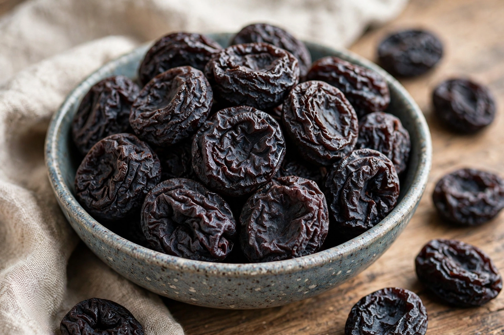

Prune

Type: Dried fruit
Source: Plums, mainly Prunus domestica
Main producers: California (USA), France, Chile, Argentina
A prune is a dried plum, most commonly from the European plum Prunus domestica. Fresh plums that are marketed as prunes are often of the freestone type, with high sugar content that allows them to be dried without fermenting around the stone. In 2001, the US Food and Drug Administration authorised plum producers to market prunes as "dried plums", following industry concern that the word "prune" carried negative connotations, particularly its association with relief of constipation.
Production
Prunes are produced by dehydrating ripe plums in tunnels of warm air, historically in the sun. California produces the great majority of the world's supply, centred on varieties descended from the Agen prune of south-western France, where the pruneau d'Agen holds protected status. Unlike the raisin (a dried grape), the prune's counterpart fresh fruit is strongly associated with the dried product.
Nutrition and uses
Prunes are rich in dietary fibre, sorbitol and phenolic compounds, which together account for their well-known mild laxative effect; prune juice, drawn by leaching the dried fruit, is used for the same purpose. Prunes are eaten as a snack and used in baking, compotes, tagines and dishes such as tzimmes, and they provide vitamin K, potassium and boron.